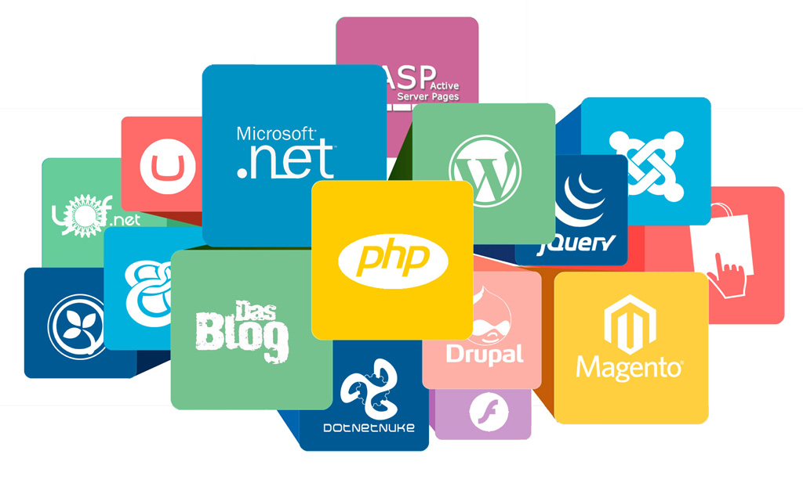

|
|

Inconvenientes
Son más vulnerables a los problemas de seguridad.
Especialmente en lo que se refiere a los plugins, temas y módulos adicionales de código abierto.
Es importante mantenerlos siempre debidamente actualizados
a la última versión, para reducir el riesgo de que nuestro sitio salga mal parado.
Flexibilidad en la personalización. Si bien es cierto que los CMS suelen ser altamente
personalizables, hay que tener en cuenta que podemos encontrarnos con algún que otro
callejón sin salida en determinadas ocasiones.
Código fuente más pesado. En muchas ocasiones los gestores de contenido generan mucho
código basura, Esto puede conllevar deficiencias de WPO y empeorar la experiencia de usuario.
Un gestor de contenidos web es una aplicación informática usada para crear, editar,
gestionar y publicar contenidos en diversos formatos en el entorno web.
El sistema permite manejar de manera independiente el contenido y el diseño,
y permite gestionar, bajo un formato estandarizado, la edición y publicación de contenidos,
reduciendo el coste de gestión del portal con respecto a un sitio web estático.
Ventajas
Facilidad de uso. En general, no es obligatorio contar con conocimientos avanzados
de programación para poder crear nuestro propio sitio web utilizando un gestor de
contenidos, ya que suelen ser bastante intuitivos.
Flexibilidad en la creación y eliminación de páginas y contenidos. Los gestores de contenido nos permiten
crear páginas nuevas y eliminar las que ya no necesitamos de una forma muy sencilla.
Open-source. Aunque no todos los CMS son de código libre, aquellos que sí lo son suelen ser realmente
completos, con la ventaja añadida de estar apoyados por una comunidad que no para de generar
todo tipo de recursos y funcionalidades para que personalices tu sitio hasta el más mínimo detalle.
Plugins. Ligado al punto anterior, los plugins introducen funcionalidades
adicionales muy interesantes, y son muy fáciles de configurar e instalar.
|